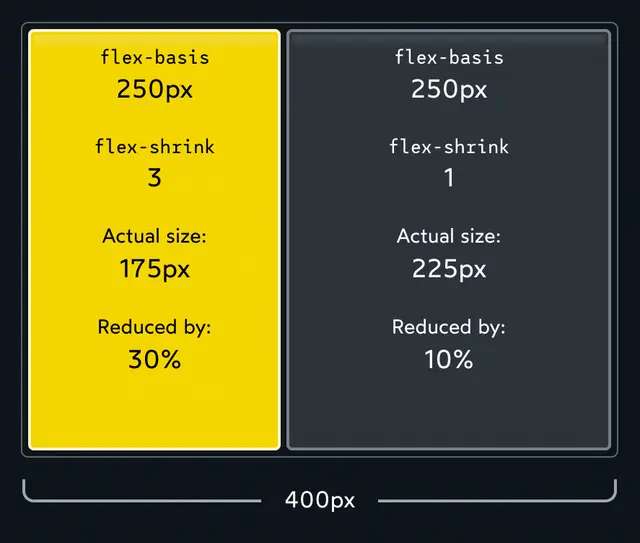
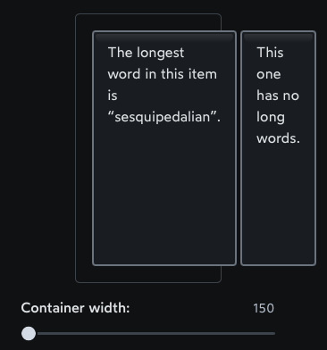

Alignment
- In the following example, we added "flex: 1;" to all the class "item" divs, this made the three elements (divs) fill the avaulable area based on its width (due to the default axis being "flex-direction: row;" given that the display is flex (i.e., "display: flex;")):
- Removing "flex: 1" from ".item" and adding "justify-content: space-between;" to ".container" gives us the following output:
- N.B."justify-content" aligns items across the main axis (currently the main axis is horizontal displaying elements in a row since "display: flex;" does this by default, however, if you change the "flex-direction" for a flex container, then the main axis would be that new direction that you have defined using "flex-direction").
- Another example we use "justify-content" property with a value of "center" which justifies our content in the center along the main axis, but it's not a "true center" in the sense that it will center (or align) the element along the opposite axis (or cross axis).
- Then as a follow up, we use the "align-items" with a value of center to center the flex items along the cross axis.
- N.B.: To stregthen this idea, because justify-content and align-items are based on the main and cross axis of your container, their behavior changes when you change the flex-direction of a flex-container.
-
Ex: when you change flex-direction to column, justify-content aligns vertically and align-items aligns horizontally.
Gap
- Setting "gap" on a flex container adds a specified space between flex items (similar to adding a margin to the items themselves).
- Applying a "gap: 8px;" produces the following output:
Assignment General Notes:
- Primary axis uses "justify-content"
- Cross axis uses "align-items"
- Difference between "justify-content" and "align-items":
- "align-self" is a flex value that is applied to specific children inside a flex container in order to change the rules of a specific flex item
- *"align-self" has the same values as "align-items"
- N.B.:When we're talking about alignment in the cross axis, each item can do whatever it wants. In the primary axis, though, we can only think about how to distribute the group.
- justify — to position something along the primary axis.
- align — to position something along the cross axis.
- content — a group of “stuff” that can be distributed.
- items — single items that can be positioned individually.
- Hypotheical Size: It's the size an element would be, in a perfect utopian world, with nothing getting in the way. I.e., when the width of a flex item is 2000px despite not fitting to that size on a normal screen, which is where flex comes in, since the parent doesnt have room for 2000px (unless you're on an ultrawide onitor :D). Thus the child is reduced to fit.
- flex-basis: the Flexbox authors created a generic “size” property called flex-basis, It's like width or height, but pegged to the primary axis, like everything else. It allows us to set the hypothetical size of an element in the primary-axis direction, regardless of whether that's horizontal or vertical.
- ** flex-basis is more of a suggestion than a hardcoded contraint unlike width.
- flex-grow: By default, elements in a Flexbox context will shrink down to their minimum comfortable size along the primary axis. This often creates extra space.
-
The default value for flex-grow is 0, which means that growing is opt-in. If we want a child to gobble up any extra space in the container, we need to explicitly tell it so.
-
** What if multiple children set flex-grow? In this case, the extra space is divided proportionally between children based on their flex-grow value.
- flex-shrink: The idea behind shink is that the items can shink given a shrink factor, so if some object has a flex-basis of ay 450px, but your flex container is only 600px, then shinking your container down to 300px would make the "actual size" shink so hte actual size is now 300px (filling the size of the current flex box, whereas the item with 450px wouldnt originally fill the conatiner as it's only 450px and not 600px).
- N.B.: The larger the flex-shink number (integer) is, the more of a squish factor that child element can take.
- EX:
- Alright, so: we have two children, each with a hypothetical size of 250px. The container needs to be at least 500px wide to contain these children at their hypothetical size.
- Let's suppose we shrink the container to 400px. Well, we can't stuff 500px worth of content into a 400px bag! We have a deficit of 100px. Our elements will need to give up 100px total, in order for them to fit.
- The flex-shrink property lets us decide how that balance is paid.
- Like flex-grow, it's a ratio. By default, both children have flex-shrink: 1, and so each child pays 1/2 of the balance. They each forfeit 50px, their actual size shrinking from 250px to 200px.
- Now, let's suppose we crank that first child up to flex-shrink: 3:
- 
- We have a total deficit of 100px. Normally, each child would pay ½, but because we've tinkered with flex-shrink, the first element winds up paying ¾ (75px), and the second element pays 1/4 (25px).
- ** Note that the absolute values don't matter, it's all about the ratio. If both children have flex-shrink: 1, each child will pay 1/2 of the total deficit. If both children are cranked up to flex-shrink: 1000, each child will pay 1000/2000 of the total deficit. Either way, it works out to the same thing.
- Essentially, if one child had flex-shink 3 and the other had flex-shink 1, then the total flex-shink becomes out of 4, so element 1 has 3 so they shink 3/4's of the new continainer size, while element 2 only shrinks by 1/4 the container size.
- When we set flex-shrink to 0 on specific flex items (or children of the flex box), we essentially “opt out” of the shrinking process altogether.
- Set minimal width (min-width) to items that overflow in a flex box, despite defining the hypothetical size and even a child with a preset minimum size (like text input, usually its 170-180px), we should redefine its min-width to 0px if we want flex shink to work on children items like text input, so they dont overflow in the flex box
- To add on, a good example is shrinking a flex box so far that the child items cannot shrink further.
- EX:the longest unbreakable string of characters in a flex child or flex item cannot break text with ease (see example image below)
- 
- Gap: the gap property allows us to create space in-between each Flexbox child (both in the main axis and the cross axis).
- Auto margins will gobble up the extra space, and apply it to the element's margin
- ******THIS IS ALL I HAVEW BEEN LIVING UP TO!!!!!!!! It flex items in a flex container to fit the size of the box based on having multiple elements (The desconstructing pancake).
- When we set "flex-wrap: wrap;", items won't shrink below their hypothetical size. At least, not when wrapping onto the next row/column is an option!

- Link has some super useful content for flex boxes.
- "flex-flow" is a CSS property that combines flex-direction and flex-wrap (sequentially)
- Ex:"flex-flow: column wrap;" makes the flex-direction (first argument) turn into columns, and the flex-wrap is the second argument which would use "wrap" in our case